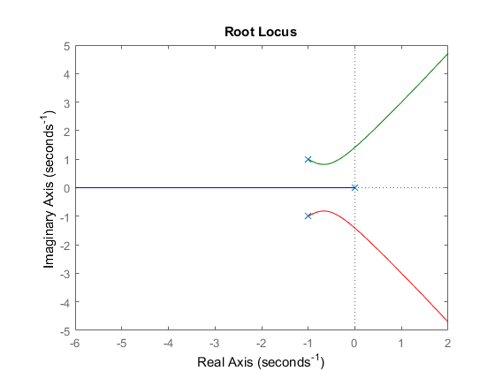

clc;
clear all;
close all;
num = [1];
den = [1 2 2 0];
sys1 = tf(num,den);
figure;
rlocus(sys1);
k = 1;
s = tf('s')
cltf = feedback(k*sys1,1)
figure;
step(cltf/s)
t = 0:0.1:10;
alpha = 1;
ramp = alpha*t;
[y,t] = lsim(sys1,ramp,t);
figure;
plot(t,y,t,ramp);
xlabel('Time(secs)');
ylabel('Amplitude');
title('Response to a Ramp Input');
num = [1];
den = [1 4 6 4 0];
sys2 = tf(num,den)
figure;
rlocus(sys2)
num = [1 2];
den = [1 2 2 0];
sys3 = tf(num,den)
figure;
rlocus(sys3)
num = [1];
den = [1 0 0];
sys4 = tf(num,den)
figure;
rlocus(sys4)
title('Satellite Altitude System with C(s)=kp')
num = [1 1];
den = [1 0 0];
sys4 = tf(num,den)
figure;
rlocus(sys4)
title('Satellite Altitude System with C(s)=kp+kds')
z = 1;
num = [1 z];
p = 20;
dem = conv([1 0 z],[1 p]);
sys4 = tf(num,den);
figure;
rlocus(sys4)
title('Rocus Locus with p = 20')
p = 9;
dem = conv([1 0 z],[1 p]);
sys4 = tf(num,den);
figure;
rlocus(sys4)
title('Rocus Locus with p = 9')
p = 3;
dem = conv([1 0 z],[1 p]);
sys4 = tf(num,den);
figure;
rlocus(sys4)
title('Rocus Locus with p = 3')
s =
s
Continuous-time transfer function.
cltf =
1
---------------------
s^3 + 2 s^2 + 2 s + 1
Continuous-time transfer function.
sys2 =
1
-------------------------
s^4 + 4 s^3 + 6 s^2 + 4 s
Continuous-time transfer function.
sys3 =
s + 2
-----------------
s^3 + 2 s^2 + 2 s
Continuous-time transfer function.
sys4 =
1
---
s^2
Continuous-time transfer function.
sys4 =
s + 1
-----
s^2
Continuous-time transfer function.
